Reference guide#
Data structures#
openalea.stat_tool.compound module#
Compound module
- openalea.stat_tool.compound.Compound(*args, **kargs)[source]#
Construction of a compound of distributions from a sum distribution and an elementary distribution or from an ASCII file.
A compound (or stopped-sum) distribution is defined as the distribution of the sum of n independent and identically distributed random variables
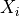
where n is the value taken by the random variable N. The distribution of N is referred to as the sum distribution while the distribution of the is referred to as the elementary distribution.- Parameters:
sum_dist (
distribution,mixture,convolution,compound) – sum distributiondist (
distribution,mixture,convolution,compound) – elementary distributionfilename (string)
- Returns:
If the construction succeeds, an object of type COMPOUND is returned, otherwise no object is returned.
- Examples:
>>> Compound(sum_dist, dist) >>> Compound(sum_dist, dist, Threshold=0.999) >>> Compound(filename)
from openalea.stat_tool import * sum_dist = Binomial(0,10,0.5) dist = Binomial(0,15,0.2) c = Compound(sum_dist, dist) c.plot()
(
Source code,png,hires.png,pdf)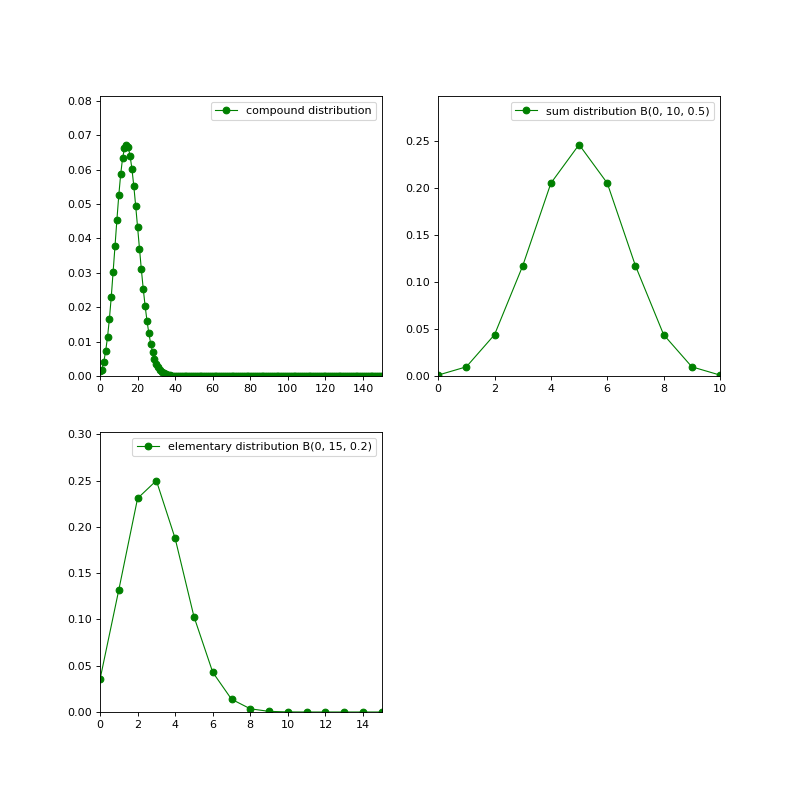
See also
{kind=link}
{kind=link}
{kind=link}
openalea.stat_tool.convolution module#
Convolution module
- openalea.stat_tool.convolution.Convolution(*args)[source]#
Construction of an object of type convolution from elementary distributions or from an ASCII file.
The distribution of the sum of independent random variables is the convolution of the distributions of these elementary random variables.
- Parameters:
dist1, dist2, …(distribution, mixture, convolution, compound) - elementary distributions,
file_name (string).
- Returns:
If the construction succeeds, the returned object is of type convolution, otherwise no object is returned.
- Examples:
>>> Convolution(dist1, dist2, ...) >>> Convolution(file_name)
from openalea.stat_tool import * sum_dist = Binomial(0,10,0.5) dist = Binomial(0,15,0.2) c = Convolution(sum_dist, dist) c.plot()
(
Source code,png,hires.png,pdf)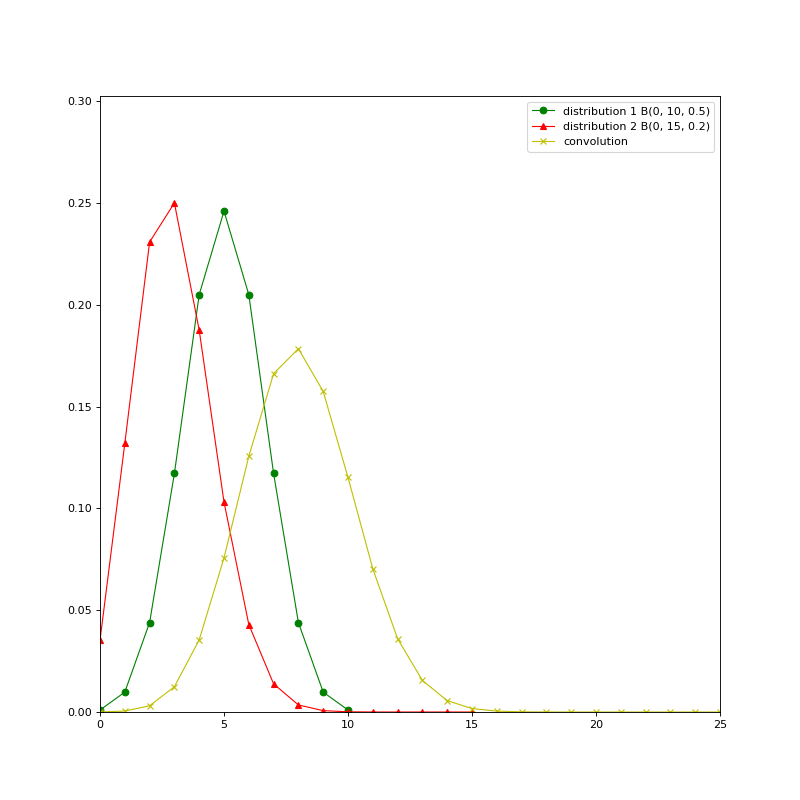
See also
{kind=link}
{kind=link}
{kind=link}
openalea.stat_tool.distribution module#
Distributions
- openalea.stat_tool.distribution.Binomial(inf_bound, sup_bound=-1, proba=-1.0)[source]#
Construction of a binomial distribution
- Parameters:
from openalea.stat_tool.distribution import Binomial b = Binomial(0,10,0.5) b.plot(legend_size=8)
(
Source code,png,hires.png,pdf)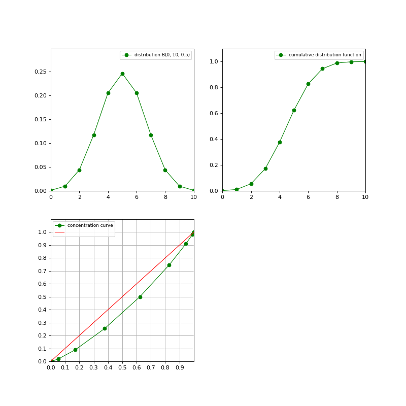
{kind=link}
{kind=link}
{kind=link}
- openalea.stat_tool.distribution.Distribution(utype, *args)[source]#
Construction of a parametric discrete distribution (either binomial, Poisson, negative binomial or uniform) from the name and the parameters of the distribution or from an ASCII file.
A supplementary shift parameter (argument inf_bound) is required with respect to the usual definitions of these discrete distributions. Constraints over parameters are given in the file syntax corresponding to the type distribution(cf. File Syntax).
- Parameters:
inf_bound (int) : lower bound to the range of possible values (shift parameter),
sup_bound (int) : upper bound to the range of possible values (only relevant for binomial or uniform distributions),
param (int, real) : parameter of either the Poisson distribution or the negative binomial distribution.
proba (int, float) : probability of success (only relevant for binomial or negative binomial distributions),
file_name (string).
Note
the names of the parametric discrete distributions can be summarized by their first letters:
“B” (“BINOMIAL”),
“P” (“POISSON”),
“NB” (“NEGATIVE_BINOMIAL”),
“U” (“UNIFORM”),
“M” (“MULTINOMIAL”),
- Returns:
If the construction succeeds, an object of type distribution is returned, otherwise no object is returned.
- Examples:
>>> Distribution("BINOMIAL", inf_bound, sup_bound, proba) >>> Distribution("POISSON", inf_bound, param) >>> Distribution("NEGATIVE_BINOMIAL", inf_bound, param, proba) >>> Distribution("UNIFORM", inf_bound, sup_bound) >>> Distribution(file_name)
See also
- openalea.stat_tool.distribution.NegativeBinomial(inf_bound, param=-1.0, proba=-1.0)[source]#
Construction of a negative binomial distribution
- Parameters:
inf_bound (int) : lower bound to the range of possible values (shift parameter)
param (int, float) : parameter of the Negative Binomial distribution
proba (int, float) : probability of ‘success’
from openalea.stat_tool.distribution import NegativeBinomial b = NegativeBinomial(1,2 ,.5) b.plot(legend_size=12)
(
Source code,png,hires.png,pdf)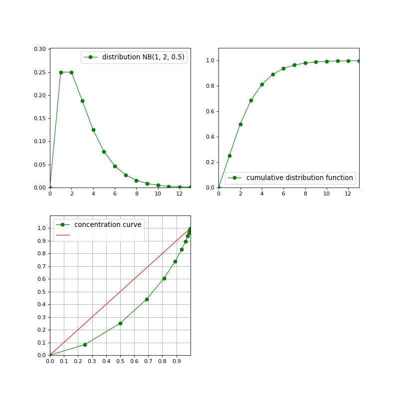
{kind=link}
{kind=link}
{kind=link}
- openalea.stat_tool.distribution.Poisson(inf_bound, param=-1.0)[source]#
Construction of a poisson distribution
- Parameters:
inf_bound (int) : lower bound to the range of possible values (shift parameter)
param (int, float) : parameter of the Poisson distribution
from openalea.stat_tool.distribution import Poisson b = Poisson(1,1.5) b.plot(legend_size=8)
(
Source code,png,hires.png,pdf)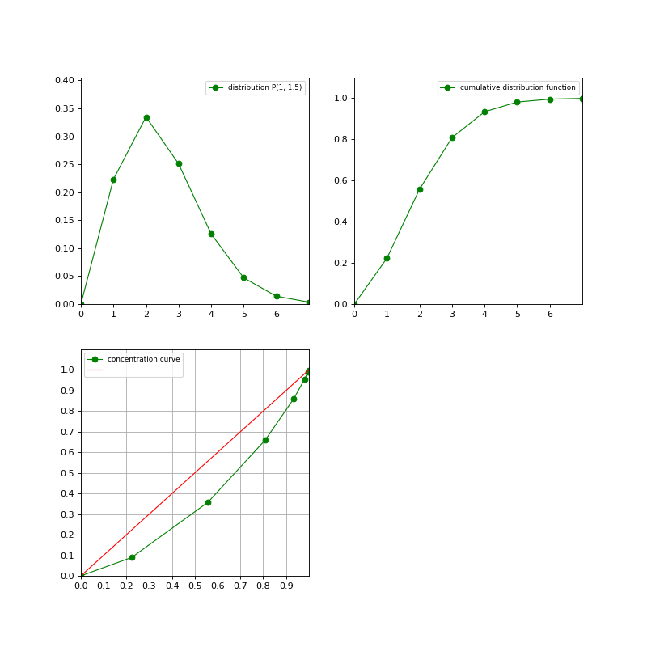
{kind=link}
{kind=link}
{kind=link}
- openalea.stat_tool.distribution.ToDistribution(histo)[source]#
Cast an object of type _DiscreteDistributionData into an object of type _Distribution.
- Parameters:
histo (DiscreteDistributionData)
- Returns:
If the object histo contains a ‘model’ part, an object of type _Distribution is returned, otherwise no object is returned.
- Examples:
>>> ToDistribution(histo)
See also
- openalea.stat_tool.distribution.ToHistogram(dist)[source]#
Cast an object of type _Distribution into an object of type _DiscreteDistributionData.
- Parameters:
dist (distribution).
- Returns:
If the object dist contains a ‘data’ part, an object of type _DiscreteDistributionData is returned, otherwise no object is returned.
- Examples:
>>> ToHistogram(dist)
See also
- openalea.stat_tool.distribution.Uniform(inf_bound, sup_bound=-1)[source]#
Construction of a uniform distribution
- Parameters:
inf_bound (int) : lower bound to the range of possible values (shift parameter)
sup_bound (int) : upper bound to the range of possilbe values
from openalea.stat_tool.distribution import Uniform b = Uniform(1,10) b.plot(legend_size=8)
(
Source code,png,hires.png,pdf)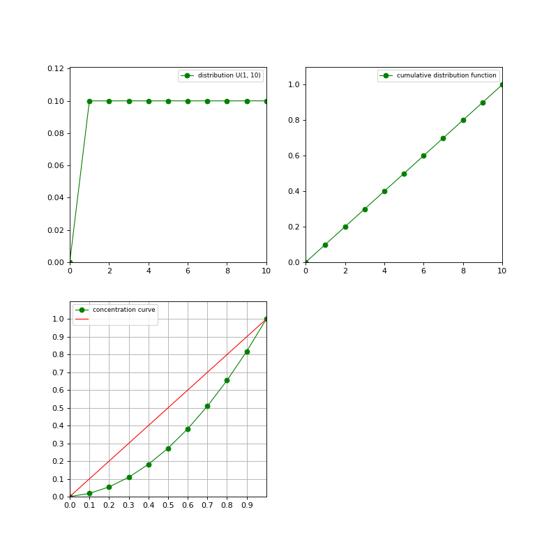
{kind=link}
{kind=link}
{kind=link}
- openalea.stat_tool.distribution.set_seed()#
Set seed
openalea.stat_tool.histogram module#
Histogram module
- openalea.stat_tool.histogram.Histogram(*args)[source]#
Construction of a frequency distribution from an object of type list(int) or from an ASCII file.
In the file syntax, the frequencies fi for each possible value i are given in two columns. In the case of an argument of type (list(int)), it is simply assumed that each array element represents one data item.
- Parameters:
list (integer) – a list of integer values
filename (string) – a valid filename in the proper format (see syntax part)
- Returns:
If the construction succeeds, an object of type _DiscreteDistributionData is returned.
- Usage:
>>> Histogram(list) >>> Histogram(filename)
- Examples:
from openalea.stat_tool import * from numpy.random import randint h = Histogram(randint(10, size=10000).tolist()) h.plot()
(
Source code,png,hires.png,pdf)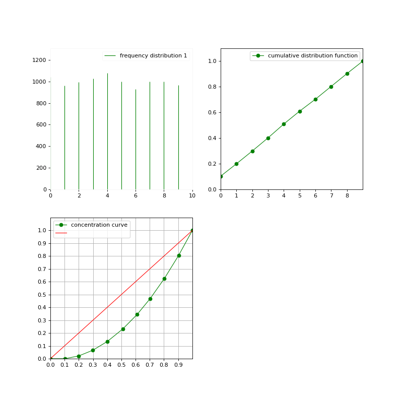
Note
works for integer values only.
See also
Save(),Cluster(),Merge(),Shift(),Transcode(),ValueSelect(),Compare(),Estimate()
{kind=link}
{kind=link}
{kind=link}
openalea.stat_tool.mixture module#
Mixture object
- openalea.stat_tool.mixture.Mixture(*args)[source]#
Construction of a mixture of distributions from elementary distributions and associated weights or from an ASCII file.
A mixture is a parametric model of classification where each elementary distribution or component represents a class with its associated weight.
- Parameters:
- weight1, weight2, … (float) - weights of each component.
These weights should sum to one (they constitute a discrete distribution).
dist1, dist2, … (_DiscreteParametricModel, _DiscreteMixture, _Convolution, _Compound) elementary distributions (or components).
filename (string) -
- Returns:
If the construction succeeds, an object of type mixture is returned, otherwise no object is returned.
- Examples:
>>> Mixture(weight1, dist1, weight2, dist2,...) >>> Mixture(filename)
See also
openalea.stat_tool.vectors module#
Vectors function and class
- openalea.stat_tool.vectors.ComputeRankCorrelation(*args, **kargs)[source]#
Computation of the rank correlation matrix.
- Usage:
>>> vec = Vectors([1,2,3,4,5,4,3,2,1]) >>> ComputeRankCorrelation(vec, Type="Spearman", FileName='')
- Arguments:
vec (vectors).
- Optional Arguments:
Type (string): type of rank correlation coefficient: “Spearman” (the default) or “Kendall”.
- Returned Object:
No object returned.
- openalea.stat_tool.vectors.ContingencyTable(*args, **kargs)[source]#
Computation of a contingency table.
- Parameters:
vec (_Vectors),
variable1, variable2 (int): variable indices,
- Keywords:
FileName (string): name of the result file,
Format (string): format of the result file: “ASCII” (default format) or “SpreadSheet”. This optional argument can only be used in conjunction with the optional argument FileName.
- Returns:
The contingency table result as a string
- Examples:
>>> ContingencyTable(vec, variable1, variable2, FileName="result", Format="SpreadSheet")
- class openalea.stat_tool.vectors.OutputFormat#
Bases:
enum- ASCII = openalea.stat_tool._stat_tool.OutputFormat.ASCII#
- GNUPLOT = openalea.stat_tool._stat_tool.OutputFormat.GNUPLOT#
- PLOT = openalea.stat_tool._stat_tool.OutputFormat.PLOT#
- SPREADSHEET = openalea.stat_tool._stat_tool.OutputFormat.SPREADSHEET#
- as_integer_ratio()#
Return integer ratio.
Return a pair of integers, whose ratio is exactly equal to the original int and with a positive denominator.
>>> (10).as_integer_ratio() (10, 1) >>> (-10).as_integer_ratio() (-10, 1) >>> (0).as_integer_ratio() (0, 1)
- bit_count()#
Number of ones in the binary representation of the absolute value of self.
Also known as the population count.
>>> bin(13) '0b1101' >>> (13).bit_count() 3
- bit_length()#
Number of bits necessary to represent self in binary.
>>> bin(37) '0b100101' >>> (37).bit_length() 6
- conjugate()#
Returns self, the complex conjugate of any int.
- denominator#
the denominator of a rational number in lowest terms
- classmethod from_bytes(bytes, byteorder='big', *, signed=False)#
Return the integer represented by the given array of bytes.
- bytes
Holds the array of bytes to convert. The argument must either support the buffer protocol or be an iterable object producing bytes. Bytes and bytearray are examples of built-in objects that support the buffer protocol.
- byteorder
The byte order used to represent the integer. If byteorder is ‘big’, the most significant byte is at the beginning of the byte array. If byteorder is ‘little’, the most significant byte is at the end of the byte array. To request the native byte order of the host system, use `sys.byteorder’ as the byte order value. Default is to use ‘big’.
- signed
Indicates whether two’s complement is used to represent the integer.
- imag#
the imaginary part of a complex number
- name#
- names = {'ASCII': openalea.stat_tool._stat_tool.OutputFormat.ASCII, 'GNUPLOT': openalea.stat_tool._stat_tool.OutputFormat.GNUPLOT, 'PLOT': openalea.stat_tool._stat_tool.OutputFormat.PLOT, 'SPREADSHEET': openalea.stat_tool._stat_tool.OutputFormat.SPREADSHEET}#
- numerator#
the numerator of a rational number in lowest terms
- real#
the real part of a complex number
- to_bytes(length=1, byteorder='big', *, signed=False)#
Return an array of bytes representing an integer.
- length
Length of bytes object to use. An OverflowError is raised if the integer is not representable with the given number of bytes. Default is length 1.
- byteorder
The byte order used to represent the integer. If byteorder is ‘big’, the most significant byte is at the beginning of the byte array. If byteorder is ‘little’, the most significant byte is at the end of the byte array. To request the native byte order of the host system, use `sys.byteorder’ as the byte order value. Default is to use ‘big’.
- signed
Determines whether two’s complement is used to represent the integer. If signed is False and a negative integer is given, an OverflowError is raised.
- values = {0: openalea.stat_tool._stat_tool.OutputFormat.ASCII, 1: openalea.stat_tool._stat_tool.OutputFormat.SPREADSHEET, 2: openalea.stat_tool._stat_tool.OutputFormat.GNUPLOT, 3: openalea.stat_tool._stat_tool.OutputFormat.PLOT}#
- openalea.stat_tool.vectors.VarianceAnalysis(*args, **kargs)[source]#
One-way variance analysis.
- Examples:
>>> VarianceAnalysis(vec, class_variable, response_variable, ... type, FileName="result", Format="SpreadSheet")
- Parameters:
vec (_Vectors),
class_variable (int): index of the class or group variable,
response_variable (int): index of the response variable,
type (string): type of the response variable (“NUMERIC” (“N”) or “ORDINAL” (“O”)).
- Keywords:
FileName (string): name of the result file,
Format (string): format of the result file: “ASCII” (default format) or “SpreadSheet”. This optional argument can only be used in conjunction with the optional argument FileName.
- Returns:
The variance analysis result as a string
- openalea.stat_tool.vectors.VectorDistance(*args, **kargs)[source]#
Construction of an object of type vector_distance from types (and eventually weights) of variables or from an ASCII file.
The type _VectorDistance implements standardization procedures. The objective of standardization is to avoid the dependence on the variable type (chosen among symbolic, ordinal, numeric and circular) and, for numeric variables, on the choice of the measurement units by converting the original variables to unitless variables.
- Parameters:
type1, type2, … (string): variable types (“NUMERIC” (“N”), “ORDINAL” (“O”) or “SYMBOLIC” (“S”)),
weight1, weight2, … (float): weights of variables,
file_name (string).
- Keywords:
Distance (string): distance type: “ABSOLUTE_VALUE” (default) or “QUADRATIC”. This optional argument is only relevant in the multivariate case.
- Returns:
If the construction succeeds, an object of type vector_distance is returned.
- Examples:
>>> VectorDistance(type1, type2,..., Distance="QUADRATIC") >>> VectorDistance(weight1, type1, weight2, type2,..., Distance="QUADRATIC") >>> VectorDistance(file_name)
See also
- openalea.stat_tool.vectors.Vectors(*args, **kargs)[source]#
Construction of a set of vectors from a multidimensional array, from a set of sequences or from an ASCII file.
The data structure of type list(list(int)) should be constituted at the most internal level of arrays of constant size.
- Parameters:
list (list(list(int))) :
seq (sequences, discrete_sequences, markov_data, semi-markov_data)
file_name (string) :
- Keywords:
Identifiers (list(int)): explicit identifiers of vectors. This optional argument can only be used if the first mandatory argument is of type list(list(int)).
IndexVariable (bool): taking into account of the implicit index parameter as a supplementary variable (default value: False). This optional argument can only be used if the first mandatory argument is of type sequences, discrete_sequences, markov_data or semi-markov_data.
- Returns:
If the construction succeeds, an object of type vectors is returned, otherwise no object is returned.
- Examples:
>>> Vectors(list, Identifiers=[1, 8, 12]) >>> Vectors(seq, IndexVariable=True) >>> Vectors(file_name)
See also
Save(),ExtractHistogram(),Cluster(),Merge(),MergeVariable(),SelectIndividual(),SelectVariable(),Shift(),Transcode(),ValueSelect(),Compare(),ComputeRankCorrelation(),ContingencyTable(),Regression(),VarianceAnalysis()
openalea.stat_tool.multivariate_mixture module#
Multivariate mixture
Functionalities#
openalea.stat_tool.regression module#
Regression functions
- openalea.stat_tool.regression.Regression(vec, utype, explanatory, response, *args, **kargs)[source]#
Simple regression (with a single explanatory variable).
- Parameters:
vec : vectors vectors
type : string “Linear” or “MovingAverage” or “NearestNeighbors”
explanatory_variable : int index of the explanatory variable
response_variable : int index of the response variable
filter : list of float filter values on the half width i.e. from one extremity to the central value (with the constraint sum(filter) = 1),
frequencies : list of float frequencies defining the filter,
dist : distribution, mixture, convolution, compound symmetric distribution, whose size of the support is even, defining the filter (for instance Distribution(“BINOMIAL”,0,4,0.5)),
span : float proportion of individuals in each neighbourhood.
- Keywords:
- Algorithmstring
“Averaging” (default)
“LeastSquares”
This optional argument can only be used if the second mandatory argument specifying the regression type is “MovingAverage”.
Weighting : bool weighting or not of the neighbors according to their distance to the computed point (default value: True). This optional argument can only be used if the second mandatory argument specifying the regression type is “NearestNeighbors”.
- Returns:
An object of type regression is returned.
- Examples:
>>> Regression(vec, "Linear", explanatory_variable, response_variable) >>> Regression(vec, "MovingAverage", explanatory_variable, ... response_variable, filter, Algorithm="LeastSquares") >>> Regression(vec, "MovingAverage", explanatory_variable, .. response_variable, frequencies, Algorithm="LeastSquares") >>> Regression(vec, "MovingAverage", explanatory_variable, ... response_variable, dist, Algorithm="LeastSquares") >>> Regression(vec, "NearestNeighbors", explanatory_variable, ... response_variable, span, Weighting=False)
See also
openalea.stat_tool.simulate module#
Simulate functions
- openalea.stat_tool.simulate.Simulate(obj, *args)[source]#
Generation of a random sample from a distribution.
- Parameters:
dist (distribution),
mixt (mixture)
convol (convolution)
compound (compound),
size (int): sample size.
- Returns:
If the first argument is of type distribution and if 0 < size < 1000000, an object of type HISTOGRAM is returned, otherwise no object is returned. If the first argument is of type mixture and if 0 < size < 1000000, an object of type mixture_data is returned, otherwise no object is returned. If the first argument is of type convolution and if 0 < size < 1000000, an object of type convolution_data is returned, otherwise no object is returned. If the first argument is of type compound and if 0 < size < 1000000, an object of type compound_data is returned, otherwise no object is returned. The returned object of type HISTOGRAM, mixture_data, convolution_data or compound_data contains both the simulated sample and the model used for simulation.
- Example:
>>> Simulate(dist, size) >>> Simulate(mixt, size) >>> Simulate(convol, size) >>> Simulate(compound, size)
- See Also:
Distribution, Mixture, Convolution, Compound, ExtractHistogram.
openalea.stat_tool.cluster module#
Cluster functions and classes
- openalea.stat_tool.cluster.Cluster(obj, utype, *args, **kargs)[source]#
Clustering of values.
In the case of the clustering of values of a frequency distribution on the basis of an information measure criterion (argument Information), both the information measure ratio and the selected optimal step are given in the shell window.
The clustering mode Step (and its variant Information) is naturally adapted to numeric variables while the clustering mode Limit applies to both symbolic (nominal) and numeric variables. In the case of a symbolic variable, the function Cluster with the mode Limit can be seen as a dedicated interface of the more general function Transcode.
- Parameters:
histo (_FrequencyDistribution, _DiscreteMixtureData, _ConvolutionData, _CompoundData),
step (int) - step for the clustering of values
information_ratio (float) - proportion of the information measure of the original sample for determining the clustering step,
limits (list(int)) - first values corresponding to the new classes classes 1, …, nb_class - 1. By convention, the first value corresponding to the first class is 0,
vec1 (_Vector) - values,
vecn (_Vectors) - vectors,
variable (int) - variable index,
seq1 (_Sequences) - univariate sequences,
seqn (_Sequences) - multivariate sequences,
discrete_seq1 (_DiscreteSequences, _Markov, _SemiMarkovData) - discrete univariate sequences,
discrete_seqn (_DiscreteSequences, _Markov, _SemiMarkovData) - discrete multivariate sequences.
- Keywords:
AddVariable (bool) : addition (instead of simple replacement) of the variable corresponding to the clustering of values (default value: False). This optional argument can only be used if the first argument is of type _DiscreteSequences, _Markov or _SemiMarkovData. The addition of the clustered variable is particularly useful if one wants to evaluate a lumpability hypothesis.
- Returns:
If step > 0, or if 0 < information_ratio < 1, or if 0 < limits[1] < limits[2] < … < limits[nb_class - 1] < (maximum possible value of histo), an object of type _FrequencyDistribution is returned.
If variable is a valid index of a variable and if step > 0, or if 0 < limits[1] < limits[2] < … < limits[nb_class - 1] < (maximum possible value taken by the selected variable of vec1 or vecn), an object of type _Vectors is returned.
If variable is a valid index of a variable of type STATE and if step > 0, or if 0 < limits[1] < limits[2] < … < limits[nb_class - 1] < (maximum possible value taken by the selected variable of seq1, seqn, discrete_seq1 or discrete_seqn), an object of type _Sequences or _DiscreteSequences is returned.
In the case of a first argument of type _Sequences, an object of type _DiscreteSequences is returned if all the variables are of type STATE, if the possible values taken by each variable are consecutive from 0 and if the number of possible values for each variable is < 15.
- Examples:
>>> Cluster(histo, "Step", step) >>> Cluster(histo, "Information", information_ratio) >>> Cluster(histo, "Limit", limits) >>> Cluster(vec1, "Step", step) >>> Cluster(vecn, "Step", variable, step) >>> Cluster(vec1, "Limit", limits) >>> Cluster(vecn, "Limit", variable, limits) >>> Cluster(seq1, "Step", step) >>> Cluster(seqn, "Step", variable, step) >>> Cluster(discrete_seq1, "Step", step, AddVariable=True) >>> Cluster(discrete_seqn, "Step", variable, step, AddVariable=True) >>> Cluster(seq1, "Limit", limits) >>> Cluster(seqn, "Limit", variable, limits) >>> Cluster(discrete_seq1, "Limit", limits, AddVariable=True) >>> Cluster(discrete_seqn, "Limit", variable, limits, AddVariable=True)
See also
Merge(),Shift(),ValueSelect(),MergeVariable(),SelectIndividual(),SelectVariable(),Transcode(),AddAbsorbingRun(),Cumulate(),Difference(),IndexExtract(),LengthSelect(),MovingAverage(),RecurrenceTimeSequences(),Removerun(),Reverse(),SegmentationExtract(),VariableScaling().
- openalea.stat_tool.cluster.Clustering(matrix, utype, *args, **kargs)[source]#
Application of clustering methods (either partitioning methods or hierarchical methods) to dissimilarity matrices between patterns.
In the case where the composition of clusters is a priori fixed, the function Clustering simply performs an evaluation of the a priori fixed partition.
- Parameters:
dissimilarity_matrix (distance_matrix) - dissimilarity matrix between patterns,
nb_cluster (int) - number of clusters,
clusters (list(list(int))) - cluster composition.
- Keywords:
Prototypes (list(int)): cluster prototypes.
Algorithm (string): “Agglomerative”, “Divisive” or “Ordering”
Criterion (string): “FarthestNeighbor” or “Averaging”
Filename (string): filename
Format (string) : “ASCII” or “SpreadSheet”
- Returns:
If the second mandatory argument is “Partitioning” and if 2 < nb_cluster < (number of patterns), an object of type clusters is returned
- Examples:
>>> Clustering(dissimilarity_matrix, "Partition", nb_cluster, Prototypes=[1, 3, 12]) >>> Clustering(dissimilarity_matrix, "Partition", clusters) >>> Clustering(dissimilarity_matrix, "Hierarchy", Algorithm="Agglomerative") >>> Clustering(dissimilarity_matrix, "Hierarchy", Algorithm="Divisive")
See also
SelectIndividual(), Symmetrize,Compare(),ToDistanceMatrix().Note
if type=Partition, Algorthim must be 1 (divisive) or 2 (ordering).
Note
if type!=Divisive criterion must be provided
- openalea.stat_tool.cluster.ToDistanceMatrix(distance_matrix)[source]#
Cast and object of type CLUSTER into an object of type DISTANCE_MATRIX.
- Parameters:
distance_matrix
- Returns:
An object of type distance_matrix is returned.
- Examples:
>>> ToDistanceMatrix(distance_matrix)
See also
- openalea.stat_tool.cluster.Transcode(obj, *args, **kargs)[source]#
Transcoding of values.
The function Cluster with the mode “Limit” can be seen as a dedicated interface of the more general function Transcode.
- Parameters:
histo (_FrequencyDistribution, _MixtureData, _ConvolutionData, _CompoundData),
new_values (array(int)) - new values replacing the old ones min, min + 1, …, max.
vec1 (_Vectors) - values,
vecn (_Vectors) - vectors,
variable (int) - variable index,
seq1 (_Sequences) - univariate sequences,
seqn (_Ssequences) - multivariate sequences,
discrete_seq1 (_DiscreteSequences, _MarkovData, _SemiMarkovData) - discrete univariate sequences,
discrete_seqn (_DiscreteSequences, _MarkovData, _SemiMarkovData) - discrete multivariate sequences.
- Keywords:
AddVariable (bool): addition (instead of simple replacement) of the variable to which the transcoding is applied (default value: False). This optional argument can only be used if the first argument is of type (_DiscreteSequences, _MarkovData, _SemiMarkovData).
- Returns:
If the new values are in same number as the old values and are consecutive from 0, an object of type _FrequencyDistribution is returned (respectively _Vectors, _Sequences or _DiscreteSequences). In the case of a first argument of type _Sequences, the returned object is of type _DiscreteSequences if all the variables are of type STATE, if the possible values for each variable are consecutive from 0 and if the number of possible values for each variable is < 15.
- Examples:
>>> Transcode(histo, new_values) >>> Transcode(vec1, new_values) >>> Transcode(vecn, variable, new_values) >>> Transcode(seq1, new_values) >>> Transcode(seqn, variable, new_values) >>> Transcode(discrete_seq1, new_values, AddVariable=True) >>> Transcode(discrete_seqn, variable, new_values, AddVariable=True)
See also
Clustering(),Merge(),Shift(),ValueSelect(),MergeVariable(),SelectIndividual(),SelectVariable(),Cumulate(),AddAbsorbingRun(),Cumulate(),Difference(),IndexExtract(),LengthSelect(),MovingAverage(),RecurrenceTimeSequences(),Removerun(),Reverse(),SegmentationExtract(),VariableScaling().
openalea.stat_tool.comparison module#
Comparison
- openalea.stat_tool.comparison.Compare(arg1, *args, **kargs)[source]#
Comparison functions factory
- Parameters:
- arg1 should be in :
compare_histo : Histograms comparison
compare_vectors : Vectors comparison
compare_seq : Sequences comparison
compare_markov : Markovian models comparison
See also
compare_histo(),compare_vectors()compare_seq()compare_markov()
- openalea.stat_tool.comparison.ComparisonTest(utype, histo1, histo2)[source]#
Test of comparaison of frequency distributions.
The objective is to compare two independent random samples in order to decide if they have been drawn from the same population or not. In the case of samples from normal populations, the Fisher-Snedecor (“F”) test enables to test is the two variances are not significantly different. The normal distribution assumption should be checked for instance by the exam of the shape coefficients (skewness and kurtosis coefficients). The test statistic is:
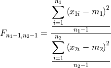
where
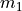
and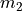
are the means of the samples.The Fisher-Snedecor variable
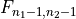
with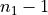
degrees of freedom and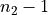
degrees of freedom can be interpreted as the ratio of the variance estimators of the two samples. In practice, the larger estimated variance is put at the denominator. Hence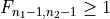
. The critical region is of the form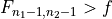
(one-sided test).In the case of samples from normal populations with equal variances, the Student (“T”) test enables to test if the two means are not significantly different. The test statistic is:
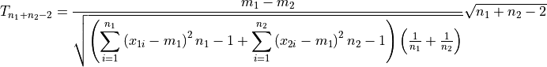
The critical region is of the form
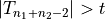
(two-sided test). For sufficiently large sample sizes, this test of sample mean comparison can be used for samples from non-normal populations with unequal variances. This test is said to be robust.The Wilcoxon-Mann-Whitney (“W”) test is a distribution-free test relying on the homogeneity of the ranking of the two sample (ranks of one sample should not cluster at either or both ends of the range). It can be seen as the non-parametric analog of the Student’s t test and can be applied to compare two sets of observations measures on an interval scale when it is supposed that the data are non-normally distributed, or to compare two sets of observations measured on an ordinal scale.
- Parameters:
type(string) : type of test “F” (Fisher-Snedecor), “T” (Student) or “W” (Wilcoxon-Mann-Whitney)
histo1, histo2 (Histogram, MixtureData, ConvolutionData, CompoundData)
- Returns:
A string containing the result of the tests
- Examples:
>>> ComparisonTest(type, histo1, histo2)
openalea.stat_tool.data_transform module#
Data transformation functions
Warning
sequence analysis package also contain a data transform module
- openalea.stat_tool.data_transform.Extract(obj, *args, **kargs)[source]#
Common method to redirect extract function call See`ExtractHistogram` or ExtractDistribution
- openalea.stat_tool.data_transform.ExtractData(model)[source]#
Extraction of the ‘data’ part of an object of type ‘model’.
This function enables to extract the ‘data’ part of an object of type ‘model’ when the estimation of model parameters from data gives rise to the construction of pseudo-data. This situation is notably exemplified by the computation of optimal state sequences from estimated hidden Markovian processes (optional argument StateSequences of the function Estimate set at “ForwardBackward” or “Viterbi”).
- Parameters:
mixt (_DiscreteMixture),
convol (_Convolution),
compound (_Compound),
hmc (_HiddenMarkov),
hsmc (_HiddenSemiMarkov).
- Returns:
If mixt contains a ‘data’ part, an object of type _DiscreteMixtureData is returned.
If convol contains a ‘data’ part, an object of type _ConvolutionData is returned.
If compound contains a ‘data’ part, an object of type _CompoundData is returned.
If hmc contains a ‘data’ part, an object of type _MarkovData is returned.
If hsmc contains a ‘data’ part, an object of type _SemiMarkovData is returned.
- Examples:
>>> ExtractData(mixt) >>> ExtractData(convol) >>> ExtractData(compound) >>> ExtractData(hmc) >>> ExtractData(hsmc)
See also
- openalea.stat_tool.data_transform.ExtractDistribution(model, *args)[source]#
Extraction of a distribution from an object of type ‘model’.
- Parameters:
mixt (_DiscreteMixture),
mixt_type (string): type of distribution: “Weight” or “Mixture”,
index (int): index of the elementary distribution,
convol (_Convolution),
compound (_Compound),
compound_type (string): type of distribution: “Sum”, “Elementary” or “Compound”,
renew (renewal),
renew_type (string): type of distribution: “InterEvent”, “Backward”, “Forward”, “LengthBias” or “Mixture”,
time (int): observation period,
markov (markov, semi-markov, hidden_markov, hidden_semi-markov),
markov_type (string): type of distribution: “Observation”, “FirstOccurrence”, “Recurrence”, “Sojourn”, “NbRun” or “NbOccurrence”,
state (int): state,
variable (int): variable index,
output (int): output,
top_param (top_parameters),
position (int): position.
- Returns:
If the arguments (mixt_type, index, compound_type, renew_type, time, markov_type, state, variable, output, position) defined an existing distribution, an object of type _Distribution is returned.
- Examples:
>>> ExtractDistribution(mixt, mixt_type) >>> ExtractDistribution(mixt, "Component", index) >>> ExtractDistribution(convol, "Elementary", index) >>> ExtractDistribution(convol, "Convolution") >>> ExtractDistribution(compound, compound_type) >>> ExtractDistribution(renew, renew_type) >>> ExtractDistribution(renew, "NbEvent", time) >>> ExtractDistribution(markov, markov_type, state) >>> ExtractDistribution(markov, markov_type, variable, output) >>> ExtractDistribution(top_param, position)
See also
- openalea.stat_tool.data_transform.ExtractHistogram(data, *args, **kargs)[source]#
Extraction of a frequency distribution from an object of type ‘data’.
- Parameters:
mixt_histo (_DiscreteMixtureData),
mixt_type (string): type of distribution: “Weight” or “Mixture”,
index (int): index of the elementary distribution,
convol_histo (_ConvolutionData),
compound_histo (_CompoundData),
compound_type (string): type of distribution: “Sum”, “Elementary” or “Compound”,
vec1 (_Vectors) : values,
vecn (_Vectors) : vectors,
variable (int) : variable index
timev (_TimeEvents, _RenewalData)
timev_type (string):
time (int) : observation period
- Returns:
If the arguments (mixt_type, index, compound_type, renew_type, time, markov_type, state, variable, output, position) defined an existing frequency distribution, an object of type _Histogram is returned.
- Examples:
>>> ExtractHistogram(mixt_histo, mixt_type) >>> ExtractHistogram(mixt_histo, "Component", index) >>> ExtractHistogram(mixt_histo, "Mixture") >>> ExtractHistogram(mixt_histo, "Weight") >>> ExtractHistogram(convol_histo, "Elementary", index) >>> ExtractHistogram(convol_histo, "Convolution") >>> ExtractHistogram(compound_histo, compound_type) >>> ExtractHistogram(compound_histo, "Sum") >>> ExtractHistogram(compound_histo, "Elementary") >>> ExtractHistogram(vec1) >>> ExtractHistogram(vecn, variable) >>> ExtractHistogram(renewval_data, renew_type) >>> ExtractHistogram(timev, timev_type) >>> ExtractHistogram(timev, "NbEvent", time) >>> ExtractHistogram(seq, "Length") >>> ExtractHistogram(seq, "Value") >>> ExtractHistogram(seq, "Value", variable) >>> ExtractHistogram(discrete_seq1, seq_type, value) >>> ExtractHistogram(discrete_seqn, seq_type, variable, value) >>> ExtractHistogram(simul_seq1, "Observation", value) >>> ExtractHistogram(simul_seq1, "Observation", variable, value) >>> ExtractHistogram(tops, "Main") >>> ExtractHistogram(top, "NbAxillary", position)
See also
- openalea.stat_tool.data_transform.Fit(histo, dist)[source]#
Fit of a frequency distribution by a theoretical distribution.
The result is displayed in the shell window (characteristics of the frequency and theoretical distributions, log-likelihood of the data for the theoretical distribution, information - maximum possible log-likelihood of the data -, c2 goodness of fit test).
The difference between the information measure and the log-likelihood is the Kullback-Leibler divergence from the observed distribution to the theoretical distribution. It is also one-half the deviance of the theoretical distribution.
Assume that a sample of size n is generated by a given random variable. The statistic measures the random deviation between the observed frequencies fi and the theoretical frequencies npi:
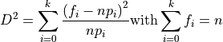
If each theoretical frequency npi is greater than a given threshold (between 1 and 5 according to the authors), has a c2 with k - 1 degrees of freedom.
- Parameters:
histo (histogram, mixture_data, convolution_data, compound_data),
dist (distribution, mixture, convolution, compound).
- Returns:
Distribution
- Examples:
>>> Fit(histo, dist)
- openalea.stat_tool.data_transform.Merge(obj, *args)[source]#
Merging of objects of the same ‘data’ type or merging of sample correlation functions.
- Parameters:
histo1, histo2, … (_Histogram, _DiscreteMixtureData, _ConvolutionData, _CompoundData),
vec1, vec2, … (_Vectors),
timev1, timev2, … (_TimeEvents, _RenewalData),
seq1, seq2, … (_Sequences, _DiscreteSequences, _MarkovData, _SemiMarkovData),
top1, top2, … (_Tops),
correl1, correl2, … (_Correlation).
- Returns:
If the arguments are of type _Histogram, _DiscreteMixtureData, _ConvolutionData, _CompoundData an object of type _Histogram is returned.
If the arguments are of type _Vectors and if the vectors have the same number of variables, an object of type vectors is returned, otherwise no object is returned.
If the arguments are of type _TimeEvents, _RenewalData, an object of type _TimeEvents is returned.
If the arguments are of type _Sequences, _DiscreteSequences, _MarkovData, _SemiMarkovData and if the sequences have the same number of variables, an object of type _Sequences is returned.
If the arguments are of type _Tops, an object of type _Tops is returned. If the arguments are of type correlation, an object of type correlation is returned.
- Examples:
>>> Merge(histo1, histo2,...) >>> Merge(vec1, vec2,...) >>> Merge(timev1, timev2,...) >>> Merge(seq1, seq2,...) >>> Merge(discrete_seq1, discrete_seq2,...) >>> Merge(top1, top2,...) >>> Merge(correl1, correl2,...)
See also
Cluster(),Shift(),Transcode(),ValueSelect(),MergeVariable(),SelectIndividual(),SelectVariable(),NbEventSelect(),TimeScaling(),TimeSelect(),AddAbsorbingRun(),Cumulate(),Difference(),IndexExtract(),LengthSelect(),MovingAverage(),RecurrenceTimeSequences(),RemoveRun(),Reverse(),SegmentationExtract(),VariableScaling(),RemoveApicalInternodes()
- openalea.stat_tool.data_transform.MergeVariable(obj, *args, **kargs)[source]#
Merging of variables.
- Parameters:
vec1, vec2, … (_Vectors),
seq1, seq2, … (_Sequences, _DiscreteSequences, _MarkovData, _SemiMarkovData).
- Keywords:
RefSample (int): reference sample to define individual identifiers (the default: no reference sample).
- Returns:
If the arguments are of type _Vectors and if the number of vectors is the same for each sample, an object of type _Vectors is returned.
If the arguments are of type _Sequences, _DiscreteSequences, _MarkovData, _SemiMarkovData, if all the variables are of type STATE, and if the number and the lengths of sequences are the same for each sample, an object of type _Sequences or _DiscreteSequences is returned.
The returned object is of type _DiscreteSequences if all the variables are of type STATE, if the possible values for each variable are consecutive from 0 and if the number of possible values for each variable is < 15.
- Examples:
>>> MergeVariable(histo1, histo2) >>> MergeVariable(vec1, vec2,..., RefSample=2) >>> MergeVariable(seq1, seq2,..., RefSample=2)
See also
Cluster(),Shift(),Transcode(),ValueSelect(),Merge(),SelectIndividual(),SelectVariable(),AddAbsorbingRun(),Cumulate(),Difference(),IndexExtract(),LengthSelect(),MovingAverage(),RecurrenceTimeSequences(),RemoveRun(),Reverse(),SegmentationExtract(),VariableScaling(),
- openalea.stat_tool.data_transform.SelectIndividual(obj, identifiers, Mode='Keep')[source]#
Selection of vectors, sequences, tops or patterns (in a dissimilarity matrix).
- Parameters:
vec (vectors),
seq (sequences, discrete_sequences, markov_data, semi-markov_data),
top (tops),
dist_matrix (distance_matrix),
identifiers (array(int)): identifiers.
- Keywords:
Mode (string): conservation or rejection of the selected individuals: “Keep” (default) or “Reject”.
- Returns:
If identifiers[1], …, identifiers[n] are valid identifiers of vectors (respectively sequences, tops or patterns compared in a dissimilarity matrix), an object of type vectors (respectively sequences or discrete_sequences, tops or distance_matrix) is returned, otherwise no object is returned. In the case of a first argument of type sequences, discrete_sequences, markov_data, semi-markov_data, the returned object is of type discrete_sequences if all the variables are of type STATE, if the possible values for each variable are consecutive from 0 and if the number of possible values for each variable is < 15.
- Examples:
>>> SelectIndividual(vec, identifiers, Mode="Reject") >>> SelectIndividual(seq, identifiers, Mode="Reject") >>> SelectIndividual(top, identifiers, Mode="Reject") >>> SelectIndividual(dist_matrix, identifiers, Mode="Reject")
See also
Cluster(),Merge(),Shift(),Transcode(),ValueSelect(),MergeVariable(),SelectVariable()AddAbsorbingRun, Cumulate, Difference, IndexExtract, LengthSelect, MovingAverage, RecurrenceTimeSequences, RemoveSeries, Reverse, SegmentationExtract, VariableScaling, RemoveApicalInternodes, Symmetrize.
- openalea.stat_tool.data_transform.SelectStep(obj, *args)[source]#
Change the internal step of a vector or a sequence
- Parameters:
obj – the vector or sequence objet
1 (argument) – the new step
- Example:
>>> seq = Sequences([]) >>> SelectStep(seq, 100) >>> Plot(seq)
- openalea.stat_tool.data_transform.SelectVariable(obj, variables, Mode='Keep')[source]#
Selection of variables.
- Parameters:
vec (vectors),
seq (sequences, discrete_sequences, markov_data, semi-markov_data),
variable (int): variable index.
variables (array(int)): variable indices.
- Keywords:
Mode (string): conservation or rejection of the selected variables: “Keep” (default) or “Reject”.
- Returns:
If either variable or variables[1], …, variables[n] are valid indices of variables, an object of type vectors (respectively sequences or discrete_sequences) is returned, otherwise no object is returned. In the case of a first argument of type sequences, the returned object is of type discrete_sequences if all the variables are of type STATE, if the possible values for each variable are consecutive from 0 and if the number of possible values for each variable is < 15.
- Examples:
>>> SelectVariable(vec, variable, Mode="Reject") >>> SelectVariable(vec, variables, Mode="Reject") >>> SelectVariable(seq, variable, Mode="Reject") >>> SelectVariable(seq, variables, Mode="Reject")
See also
AddAbsorbingRun,
Cluster(),Cumulate(), Difference, IndexExtract, LengthSelect,Merge(),MergeVariable(), MovingAverage, RecurrenceTimeSequences, RemoveRun, Reverse,SelectIndividual(),Shift(),Transcode(),ValueSelect(), SegmentationExtract, VariableScaling.
- openalea.stat_tool.data_transform.Shift(obj, *args)[source]#
Shifting of values
- Parameters:
histo (histogram, mixture_data, convolution_data, compound_data),
param (int): shifting parameter,
vec1 (vectors): values,
vecn (vectors): vectors,
variable (int): variable index,
seq1 (sequences): univariate sequences,
seqn (sequences): multivariate sequences.
- Returns:
If the shifting makes that the lower bound to the possible values is positive, an object of type HISTOGRAM (respectively _Vectors, _Sequences) is returned. In the case of a first argument of type sequences, the returned object is of type discrete_sequences if all the variables are of type STATE, if the possible values for each variable are consecutive from 0 and if the number of possible values for each variable is 15.
- Examples:
>>> Shift(histo, param) >>> Shift(vec1, param) >>> Shift(vecn, variable, param) >>> Shift(seq1, param) >>> Shift(seqn, variable, param)
See also
Cluster(),Merge(),Transcode(),SelectIndividual(),MergeVariable(),SelectVariable()AddAbsorbingRun(),Cumulate(),Difference(),Lengthselect(),MovingAverage(),IndexExtract(),RecurrenceTimeSequences(),RemoveRun(),Reverse(),SegmentationExtract(),ValueSelect(),VariableScaling().
- openalea.stat_tool.data_transform.Unnormalize(obj)[source]#
- Parameters:
dist_matrix (distance_matrix).
- Returns:
An object of type distance_matrix is returned.
- Examples:
>>> Unnormalize(dist_matrix)
- openalea.stat_tool.data_transform.ValueSelect(obj, *args, **kargs)[source]#
Selection of individuals according to the values taken by a variable
- Parameters:
histo (histogram, mixture_data, convolution_data, compound_data),
value (int): value,
min_value (int): minimum value,
max_value (int): maximum value,
vec1 (vectors): values,
vecn (vectors): vectors,
variable (int): variable index,
seq1 (sequences, discrete_sequences, markov_data, semi-markov_data): univariate sequences,
seqn (sequences, discrete_sequences, markov_data, semi-markov_data): multivariate sequences.
- Keywords:
Mode (string): conservation or rejection of selected individuals: “Keep” (the default) or “Reject”.
- Returns:
If either value 0 or if 0 < min_value < max_value and if the range of values defined either by value or by min_value and max_value enables to select individuals, an object of type HISTOGRAM is returned (respectively vectors, sequences or discrete_sequences), otherwise no object is returned. In the case of a first argument of type sequences, discrete_sequences, markov_data or semi-markov_data, the returned object is of type discrete_sequences if all the variables are of type STATE, if the possible values for each variable are consecutive from 0 and if the number of possible values for each variable is < 15.
- Examples:
>>> ValueSelect(histo, value, Mode="Reject") >>> ValueSelect(histo, min_value, max_value, Mode="Reject") >>> ValueSelect(vec1, value, Mode="Reject") >>> ValueSelect(vec1, min_value, max_value, Mode="Reject") >>> ValueSelect(vecn, variable, value, Mode="Reject") >>> ValueSelect(vecn, variable, min_value, max_value, Mode="Reject") >>> ValueSelect(seq1, value, Mode="Reject") >>> ValueSelect(seq1, min_value, max_value, Mode="Reject") >>> ValueSelect(seqn, variable, value, Mode="Reject") >>> ValueSelect(seqn, variable, min_value, max_value, Mode="Reject")
See also
Cluster(),Merge(),Shift(),Transcode(),SelectIndividual(),MergeVariable(),SelectVariable()Cumulate` Difference` IndexExtract` LengthSelect`, MovingAverage`, RecurrenceTimeSequences` RemoveRun`, Reverse`, SegmentationExtract`, VariableScaling`.
openalea.stat_tool.estimate module#
Estimate functions
Warning
sequence analysis package also contains an estimate module and function
- openalea.stat_tool.estimate.Estimate(histo, itype, *args, **kargs)[source]#
Estimate function
This function is a dispatcher to several estimate functions depending on the first argument and the type.
- Parameters:
obj – the input object (may be histogram, sequence, compound, …)
itype – string.
- class openalea.stat_tool.estimate.EstimateFunctions[source]#
Bases:
objectClass containing histogram estimation functions This class must not be used alone, but through an histogram object
- estimate_DiscreteMixture(*args, **kargs)[source]#
Estimate a finite mixture of discrete distributions
- Parameters:
histo (histogram, mixture_data, convolution_data, compound_data),
- distributions (list)a list of distribution object
or distribution label(string) : ‘B’, ‘NB’, ‘U’, ‘P’, …
unknown (string): type of unknown distribution: “Sum” or “Elementary”.
- Keywords:
MinInfBound (int): lower bound to the range of possible values (0 -default- or 1). This optional argument cannot be used in conjunction with the optional argument InitialDistribution.
InfBoundStatus (string): shifting or not of the distribution: “Free” (default value) or “Fixed”.
DistInfBoundStatus (string): shifting or not of the subsequent components of the mixture: “Free” (default value) or “Fixed”.
NbComponent (string): estimation of the number of components of the mixture: “Fixed” (default value) or “Estimated”. Le number of estimated components is comprised between 1 and a maximum number which is given by the number of specified parametric distributions in the mandatory arguments (all of these distributions are assumed to be unknown).
- Penalty (string): type of Penalty function for model selection: “AIC” (Akaike Information Criterion), “AICc” (corrected Akaike Information Criterion) “BIC” (Bayesian Information Criterion - default value). “BICc” (corrected Bayesian Information Criterion).
This optional argument can only be used if the optional argument NbComponent is set at “Estimated”.
- Examples:
>>> estimate_DiscreteMixture(histo, "MIXTURE", "B", dist,...,, MinInfBound=1, InfBoundStatus="Fixed", DistInfBoundStatus="Fixed") >>> estimate_DiscreteMixture(histo, "MIXTURE", "B", "NB",...,, MinInfBound=1, InfBoundStatus="Fixed", DistInfBoundStatus="Fixed", NbComponent="Estimated", Penalty="AIC") >>> Estimate(histo, "MIXTURE", "B", dist, MinInfBound=1, InfBoundStatus="Fixed", DistInfBoundStatus="Fixed") >>> Estimate(histo, "MIXTURE", "B", "NB", MinInfBound=1, InfBoundStatus="Fixed", DistInfBoundStatus="Fixed", NbComponent="Estimated", Penalty="AIC")
- estimate_compound(*args, **kargs)[source]#
estimate a compound
- Usage:
>>> Estimate(histo, "COMPOUND", dist, unknown, Parametric=False, MinInfBound=0) Estimate(histo, "COMPOUND", dist, unknown, InitialDistribution=initial_dist, Parametric=False)
- estimate_convolution(*args, **kargs)[source]#
Estimate a convolution
- Usage:
>>> Estimate(histo, "CONVOLUTION", dist, MinInfBound=1, Parametric=False) Estimate(histo, "CONVOLUTION", dist, InitialDistribution=initial_dist, Parametric=False)
- estimate_nonparametric()[source]#
Estimate a non parametric distribution
- Parameters:
histo (histogram, mixture_data, convolution_data, compound_data)
- Usage:
>>> Estimate(histo, "NON-PARAMETRIC") >>> estimate_nonparametric(histo)
- estimate_parametric(ident, MinInfBound=0, InfBoundStatus='Free')[source]#
Estimate a parametric discrete distribution (binomial, Poisson or negative binomial distribution with an additional shift parameter)
- Parameters:
histo (histogram, mixture_data, convolution_data, compound_data),
ident (“BINOMIAL”, “POISSON”, “NEGATIVE_BINOMIAL”, “UNIFORM”)
MinInfBound (int): lower bound to the range of possible values (0 - default value - or 1).
- InfBoundStatus (string): shifting or not of the distribution:
“Free” (default value) or “Fixed”. T
- Usage:
>>> estimate_parametric(histo, ident, MinInfBound=0, InfBoundStatus="Free") >>> Estimate(histo, "NB", MinInfBound=1, InfBoundStatus="Fixed")
Display and Plot functionalities#
openalea.stat_tool.output module#
Output functions
- openalea.stat_tool.output.Display(obj, *args, **kargs)[source]#
ASCII output of an object of the STAT module
ASCII output of sets of sequences or tops (ViewPoint=”Data”): the format “Column” corresponds to the ASCII file syntax for objects of type sequences or tops. For a given value of the index parameter, the different variables are successively displayed. With the format “Line”, the univariate sequence for each variable are displayed on consecutive lines. In the case of univariate sequences, the two formats give the same output.
ASCII output of a (frequency) distribution and the associate hazard or survival rates (ViewPoint=”Survival”): It is assumed that the (frequency) distribution represents lifetime and the hazard or survival rates are deduced from this lifetime distribution.
ASCII output of the state profile given by the smoothed probabilities
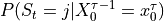
as a function of the index parameter t computed from the parameters of a hidden Markovian model for the sequence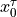
(ViewPoint=”StateProfile”).- Parameters:
obj - object to display,
vec (_Vectors),
seq (_Sequences, _DiscreteSequences, _MarkovData, _SemiMarkovData, _Tops),
dist (_Distribution, _MixtureDist, _Convolution, _Compound),
histo (_FrequencyDistribution, _DiscreteMixtureData, _ConvolutionData, _CompoundData),
hmc (_HiddenMarkov),
hsmc (_HiddenSemiMarkov),
identifier (int) - identifier of a sequence.
- Keywords:
ViewPoint (string): point of view on the object (“Survival” or “Data” or “StateProfile”). This optional argument can be set at
“Data” only if the first argument is of type _Vectors, _Sequences, _DiscreteSequences, _MarkovData, _SemiMarkovData or _Tops,
“Survival” only if the first argument is of type _Distribution, _MixtureDist, _Convolution, _Compound, _FrequencyDistribution, _DiscreteMixtureData, _ConvolutionData or _CompoundData
“StateProfile” only if the first argument is of type _HiddenMarkov or _HiddenSemiMarkov.
Detail (int): level of detail: 1 (default value) or 2. This optional argument cannot be used if the optional argument ViewPoint is set at “Survival” or “StateProfile”.
Format (string): format of sequences (only relevant for multivariate sequences): “Column” (default value) or “Line”. This optional argument can only be used if the optional argument ViewPoint is set at “Data”, and hence, if the first argument is of type _Vectors, _Sequences, _DiscreteSequences, _MarkovData, _SemiMarkovData or _Tops.
- Returns:
A string
- Examples:
>>> from openalea.stat_tool.output import Display >>> Display(obj, Detail=2) >>> Display(vec, ViewPoint="Data", Detail=2) >>> Display(seq, ViewPoint="Data", Format="Line", Detail=2) >>> Display(dist, ViewPoint="Survival") >>> Display(histo, ViewPoint="Survival") >>> Display(hmc, identifier, ViewPoint="StateProfile") >>> Display(hsmc, identifier, ViewPoint="StateProfile")
- openalea.stat_tool.output.Plot(obj, *args, **kargs)[source]#
Graphical output of an object of the STAT module using the GNUPLOT software.
In the case of Markovian models or sequences, the graphical outputs are grouped as follows:
“SelfTransition”: add outgoing server thunderbirdself-transition probability as a function of the index parameter (non-homogeneous Markov chain),
“Observation”: observation distributions attached to each state of the underlying (semi-)Markov chain (lumped processes or hidden Markovian processes),
“Intensity”: (empirical) probabilities of states/outputs as a function of the index parameter,
“FirstOccurrence”: (frequency) distributions of the time-up to the first occurrence of a state/output (or first-passage time in a state/output distributions),
“Recurrence” (frequency) distributions of the recurrence time in a state/output,
“Sojourn”: (frequency) distributions of the sojourn time in a state/output (or state/output occupancy distributions). For the frequency distributions extracted from sequences, the sojourn times in the last visited states which are considered as censored are isolated.
“Counting”: counting (frequency) distributions (either distributions of the number of runs (or clumps) of a state/output per sequence or distributions of the number of occurrences of a state/output per sequence).
Graphical output of a (frequency) distribution and the associate hazard or survival rates (ViewPoint=”Survival”): It is assumed that the (frequency) distribution represents lifetime and the hazard or survival rates are deduced from this lifetime distribution. Graphical output of the state profile given by the smoothed probabilities as a function of the index parameter t computed from the parameters of a hidden Markovian model for the sequence (ViewPoint=”StateProfile”).
- Parameters:
obj1 ((_Distribution, _Mixture, _Convolution, _Compound,) – _DiscreteDistributionData, _DiscreteMixtureData, _ConvolutionData, _CompoundData,`_Renewal`, _TimeEvents, _RenewalData, _Sequences, _DistanceMatrix, ` _TopParameters`, _Tops),
vec1 ((_Vectors) values,)
vecn ((_Vectors) vectors,)
variable ((int) variable index,)
obj2 ((_Markov, _SemiMarkov, _HiddenMarkov, _HiddenSemiMarkov,) – _DiscreteSequences, _MarkovData, _SemiMarkovData): Markovian model for discrete univariate sequences or discrete univariate sequences,
obj3 ((_Markov, _SemiMarkov, _HiddenMarkov, _HiddenSemiMarkov,) – _DiscreteSequences, _MarkovData, _SemiMarkovData): Markovian model for discrete multivariate sequences or discrete multivariate sequences,
(string) (type) – or sequences: “SelfTransition”, “Observation”, “Intensity”, “FirstOccurrence”, “Recurrence”, “Sojourn” or “Counting”,
dist1 ((_Distribution, _Mixture, _Convolution, _Compound),)
dist2 ((_Distribution, _Mixture, _Convolution, _Compound),)
... ((_DiscreteDistributionData, _DiscreteMixtureData, _ConvolutionData,)
histo1 ((_DiscreteDistributionData, _DiscreteMixtureData, _ConvolutionData,) – _CompoundData),
histo2 ((_DiscreteDistributionData, _DiscreteMixtureData, _ConvolutionData,) – _CompoundData),
... – _CompoundData),
seq ((_Sequences, _DiscreteSequences, _MarkovData, _SemiMarkovData,) – _Tops),
dist ((_Distribution, _Mixture, _Convolution, _Compound),)
histo ((_DiscreteDistributionData, _DiscreteMixtureData, _ConvolutionData,) – _CompoundData),
hmc ((_HiddenMarkov),)
hsmc ((_HiddenSemiMarkov),)
identifier ((int) identifier of a sequence.)
Keywords
--------
ViewPoint ((string) point of view on the object ("Data" or "Survival") –
- or “StateProfile”). This optional argument can be set at :
”Data” only if the first mandatory argument is of type sequences, discrete_sequences, markov_data, semi-markov_data or tops,
”Survival” only if the first mandatory argument is of type distribution, mixture, convolution, compound, histogram, mixture_data, convolution_data or compound_data
”StateProfile” only if the first mandatory argument is of type hidden_markov or hidden_semi-markov.
Title ((string)) – graphic title (the default: no title).
nbcol ((int)) – number of columns in the output figure
Show ((dict)) –
Display options
legend_size: 10
legend_nbcol: 2
legend_loc: best
legend: True/False
- Return type:
Nothing.
Examples
>>> from openalea.stat_tool.output import Display >>> Plot(obj1, Title="Distribution") >>> Plot(vec1, Title="Values") >>> Plot(vecn, variable, Title="Vectors") >>> Plot(variable) >>> Plot(obj2, type, Title="Sequences") >>> Plot(type) >>> Plot(obj3, type, variable, Title="Multivariate sequences") >>> Plot(type, variable) >>> Plot(dist1, dist2,..., Title="Family of distributions") >>> Plot(histo1, histo2,..., Title="Family of frequency distributions") >>> Plot(seq, ViewPoint="Data") >>> Plot(dist, ViewPoint="Survival", Title="Survival rates") >>> Plot(histo, ViewPoint="Survival", Title="Survival rates") >>> Plot(hsmc, identifier, ViewPoint="StateProfile", Title="Smoothed probabilities")
- openalea.stat_tool.output.Save(obj, *args, **kargs)[source]#
Saving of an object of the STAT module in a file.
Saving of sets of sequences or ‘tops’ (ViewPoint=”Data”): the format “Column” corresponds to the ASCII file syntax for objects of type _Sequences or _Tops. For a given value of the index parameter, the different variables are successively written. With the format “Line”, the univariate sequence for each variable are written on consecutive lines. In the case of univariate sequences, the two formats give the same file.
Saving of a (frequency) distribution and the associate hazard or survival rates (ViewPoint=”Survival”): It is assumed that the (frequency) distribution represents lifetime and the hazard or survival rates are deduced from this lifetime distribution.
Saving of the state profile given by the smoothed probabilities as a function of the index parameter t computed from the parameters of a hidden Markovian model for the sequence (ViewPoint=”StateProfile”).
Note
The persistence mechanism is implemented by the Save function.
- Parameters:
obj (object of the STAT module (except objects of type vector_distance),)
file_name ((string),)
histo ((_FrequencyDistribution, _DiscreteMixtureData, _ConvolutionData, _CompoundData),)
vec ((_Vectors),)
timev ((_TimeEvents, _RenewalData),)
seq ((_Sequences, _DiscreteSequences, _MarkovData, _SemiMarkovData, _Tops).)
dist ((_Distribution, _Mixture, _Convolution, _Compound),)
hmc ((_HiddenMarkov),)
hsmc ((_HiddenSemiMarkov).)
Keywords
--------
ViewPoint ((string)) –
Point of view on the object (“Data” or “Survival” or “StateProfile”).
This optional argument can be set at :
- ”Data” only if the first argument is of type _Sequences,
_DiscreteSequences, _MarkovData, _SemiMarkovData or _Tops,
- ”Survival” only if the first argument is of type _Distribution,
_Mixture, _Convolution, _Compound, _FrequencyDistribution, _DiscreteMixtureData, _ConvolutionData or _CompoundData
- ”StateProfile” only if the first argument is of type `_HiddenMarkov or
_HiddenSemiMarkov.
Detail ((int)) – level of detail: 1 (default value) or 2. This optional argument can only be used if the optional argument ViewPoint is not set, or if the optional argument ViewPoint is set at “Data” and if the first mandatory argument is of type _Vectors, _Sequences, _DiscreteSequences, _MarkovData, _SemiMarkovData or _Tops.
format (file) – These file formats cannot be specified if the optional argument ViewPoint is set at “Data”. The optional argument Format can only be set at “Binary” if the optional argument ViewPoint is not set.
Format ((string)) – format of sequences (only relevant for multivariate sequences): “Column” (default value) or “Line”. This optional argument can only be used if the optional argument ViewPoint is set at “Data”, and hence, if the first argument is of type _Sequences, _DiscreteSequences, _MarkovData, _SemiMarkovData or _Tops. If the first argument is of type _Vectors, use Format=”Data” to actually save the data rather than their summary.
Sequence ((int)) – identifier of a sequence. This optional argument can only be used if the optional argument ViewPoint is set at “StateProfile”, and hence, if the first mandatory argument is of type _HiddenMarkov or _HiddenSemiMarkov.
- Return type:
No object returned.
Examples
>>> Save(obj, file_name, Format="ASCII", Detail=2) >>> Save(histo, file_name, ViewPoint="Data") >>> Save(vec, file_name, ViewPoint="Data", Detail=2) >>> Save(vec, file_name, Format="Data") >>> Save(timev, file_name, ViewPoint="Data") >>> Save(seq, file_name, ViewPoint="Data", Format="Line", Detail=2) >>> Save(dist, file_name, ViewPoint="Survival", Format="SpreadSheet") >>> Save(histo, file_name, ViewPoint="Survival", Format="SpreadSheet") >>> Save(hmc, ViewPoint="StateProfile", Sequence=1, Format="SpreadSheet") >>> Save(hsmc, ViewPoint="StateProfile", Sequence=1, Format="SpreadSheet")
- class openalea.stat_tool.output.StatInterface[source]#
Bases:
objectAbstract base class for stat_tool objects
- display(*args, **kargs)[source]#
ASCII output of an object of the STAT module
ASCII output of sets of sequences or tops (ViewPoint=”Data”): the format “Column” corresponds to the ASCII file syntax for objects of type sequences or tops. For a given value of the index parameter, the different variables are successively displayed. With the format “Line”, the univariate sequence for each variable are displayed on consecutive lines. In the case of univariate sequences, the two formats give the same output.
ASCII output of a (frequency) distribution and the associate hazard or survival rates (ViewPoint=”Survival”): It is assumed that the (frequency) distribution represents lifetime and the hazard or survival rates are deduced from this lifetime distribution.
ASCII output of the state profile given by the smoothed probabilities as a function of the index parameter t computed from the parameters of a hidden Markovian model for the sequence (ViewPoint=”StateProfile”).
- Parameters:
obj - object to display,
vec (_Vectors),
seq (_Sequences, _DiscreteSequences, _MarkovData, _SemiMarkovData, _Tops),
dist (_Distribution, _MixtureDist, _Convolution, _Compound),
histo (_FrequencyDistribution, _DiscreteMixtureData, _ConvolutionData, _CompoundData),
hmc (_HiddenMarkov),
hsmc (_HiddenSemiMarkov),
identifier (int) - identifier of a sequence.
- Keywords:
ViewPoint (string): point of view on the object (“Survival” or “Data” or “StateProfile”). This optional argument can be set at
“Data” only if the first argument is of type _Vectors, _Sequences, _DiscreteSequences, _MarkovData, _SemiMarkovData or _Tops,
“Survival” only if the first argument is of type _Distribution, _MixtureDist, _Convolution, _Compound, _FrequencyDistribution, _DiscreteMixtureData, _ConvolutionData or _CompoundData
“StateProfile” only if the first argument is of type _HiddenMarkov or _HiddenSemiMarkov.
Detail (int): level of detail: 1 (default value) or 2. This optional argument cannot be used if the optional argument ViewPoint is set at “Survival” or “StateProfile”.
Format (string): format of sequences (only relevant for multivariate sequences): “Column” (default value) or “Line”. This optional argument can only be used if the optional argument ViewPoint is set at “Data”, and hence, if the first argument is of type _Vectors, _Sequences, _DiscreteSequences, _MarkovData, _SemiMarkovData or _Tops.
- Returns:
A string
- Examples:
>>> from openalea.stat_tool.output import Display >>> Display(obj, Detail=2) >>> Display(vec, ViewPoint="Data", Detail=2) >>> Display(seq, ViewPoint="Data", Format="Line", Detail=2) >>> Display(dist, ViewPoint="Survival") >>> Display(histo, ViewPoint="Survival") >>> Display(hmc, identifier, ViewPoint="StateProfile") >>> Display(hsmc, identifier, ViewPoint="StateProfile")
- plot(*args, **kargs)[source]#
Graphical output of an object of the STAT module using the GNUPLOT software.
In the case of Markovian models or sequences, the graphical outputs are grouped as follows:
“SelfTransition”: add outgoing server thunderbirdself-transition probability as a function of the index parameter (non-homogeneous Markov chain),
“Observation”: observation distributions attached to each state of the underlying (semi-)Markov chain (lumped processes or hidden Markovian processes),
“Intensity”: (empirical) probabilities of states/outputs as a function of the index parameter,
“FirstOccurrence”: (frequency) distributions of the time-up to the first occurrence of a state/output (or first-passage time in a state/output distributions),
“Recurrence” (frequency) distributions of the recurrence time in a state/output,
“Sojourn”: (frequency) distributions of the sojourn time in a state/output (or state/output occupancy distributions). For the frequency distributions extracted from sequences, the sojourn times in the last visited states which are considered as censored are isolated.
“Counting”: counting (frequency) distributions (either distributions of the number of runs (or clumps) of a state/output per sequence or distributions of the number of occurrences of a state/output per sequence).
Graphical output of a (frequency) distribution and the associate hazard or survival rates (ViewPoint=”Survival”): It is assumed that the (frequency) distribution represents lifetime and the hazard or survival rates are deduced from this lifetime distribution. Graphical output of the state profile given by the smoothed probabilities as a function of the index parameter t computed from the parameters of a hidden Markovian model for the sequence (ViewPoint=”StateProfile”).
- Parameters:
obj1 ((_Distribution, _Mixture, _Convolution, _Compound,) – _DiscreteDistributionData, _DiscreteMixtureData, _ConvolutionData, _CompoundData,`_Renewal`, _TimeEvents, _RenewalData, _Sequences, _DistanceMatrix, ` _TopParameters`, _Tops),
vec1 ((_Vectors) values,)
vecn ((_Vectors) vectors,)
variable ((int) variable index,)
obj2 ((_Markov, _SemiMarkov, _HiddenMarkov, _HiddenSemiMarkov,) – _DiscreteSequences, _MarkovData, _SemiMarkovData): Markovian model for discrete univariate sequences or discrete univariate sequences,
obj3 ((_Markov, _SemiMarkov, _HiddenMarkov, _HiddenSemiMarkov,) – _DiscreteSequences, _MarkovData, _SemiMarkovData): Markovian model for discrete multivariate sequences or discrete multivariate sequences,
(string) (type) – or sequences: “SelfTransition”, “Observation”, “Intensity”, “FirstOccurrence”, “Recurrence”, “Sojourn” or “Counting”,
dist1 ((_Distribution, _Mixture, _Convolution, _Compound),)
dist2 ((_Distribution, _Mixture, _Convolution, _Compound),)
... ((_DiscreteDistributionData, _DiscreteMixtureData, _ConvolutionData,)
histo1 ((_DiscreteDistributionData, _DiscreteMixtureData, _ConvolutionData,) – _CompoundData),
histo2 ((_DiscreteDistributionData, _DiscreteMixtureData, _ConvolutionData,) – _CompoundData),
... – _CompoundData),
seq ((_Sequences, _DiscreteSequences, _MarkovData, _SemiMarkovData,) – _Tops),
dist ((_Distribution, _Mixture, _Convolution, _Compound),)
histo ((_DiscreteDistributionData, _DiscreteMixtureData, _ConvolutionData,) – _CompoundData),
hmc ((_HiddenMarkov),)
hsmc ((_HiddenSemiMarkov),)
identifier ((int) identifier of a sequence.)
Keywords
--------
ViewPoint ((string) point of view on the object ("Data" or "Survival") –
- or “StateProfile”). This optional argument can be set at :
”Data” only if the first mandatory argument is of type sequences, discrete_sequences, markov_data, semi-markov_data or tops,
”Survival” only if the first mandatory argument is of type distribution, mixture, convolution, compound, histogram, mixture_data, convolution_data or compound_data
”StateProfile” only if the first mandatory argument is of type hidden_markov or hidden_semi-markov.
Title ((string)) – graphic title (the default: no title).
nbcol ((int)) – number of columns in the output figure
Show ((dict)) –
Display options
legend_size: 10
legend_nbcol: 2
legend_loc: best
legend: True/False
- Return type:
Nothing.
Examples
>>> from openalea.stat_tool.output import Display >>> Plot(obj1, Title="Distribution") >>> Plot(vec1, Title="Values") >>> Plot(vecn, variable, Title="Vectors") >>> Plot(variable) >>> Plot(obj2, type, Title="Sequences") >>> Plot(type) >>> Plot(obj3, type, variable, Title="Multivariate sequences") >>> Plot(type, variable) >>> Plot(dist1, dist2,..., Title="Family of distributions") >>> Plot(histo1, histo2,..., Title="Family of frequency distributions") >>> Plot(seq, ViewPoint="Data") >>> Plot(dist, ViewPoint="Survival", Title="Survival rates") >>> Plot(histo, ViewPoint="Survival", Title="Survival rates") >>> Plot(hsmc, identifier, ViewPoint="StateProfile", Title="Smoothed probabilities")
- save(filename, Detail=2, ViewPoint='', Format='ASCII')[source]#
Saving of an object of the STAT module in a file.
Saving of sets of sequences or ‘tops’ (ViewPoint=”Data”): the format “Column” corresponds to the ASCII file syntax for objects of type _Sequences or _Tops. For a given value of the index parameter, the different variables are successively written. With the format “Line”, the univariate sequence for each variable are written on consecutive lines. In the case of univariate sequences, the two formats give the same file.
Saving of a (frequency) distribution and the associate hazard or survival rates (ViewPoint=”Survival”): It is assumed that the (frequency) distribution represents lifetime and the hazard or survival rates are deduced from this lifetime distribution.
Saving of the state profile given by the smoothed probabilities as a function of the index parameter t computed from the parameters of a hidden Markovian model for the sequence (ViewPoint=”StateProfile”).
Note
The persistence mechanism is implemented by the Save function.
- Parameters:
obj (object of the STAT module (except objects of type vector_distance),)
file_name ((string),)
histo ((_FrequencyDistribution, _DiscreteMixtureData, _ConvolutionData, _CompoundData),)
vec ((_Vectors),)
timev ((_TimeEvents, _RenewalData),)
seq ((_Sequences, _DiscreteSequences, _MarkovData, _SemiMarkovData, _Tops).)
dist ((_Distribution, _Mixture, _Convolution, _Compound),)
hmc ((_HiddenMarkov),)
hsmc ((_HiddenSemiMarkov).)
Keywords
--------
ViewPoint ((string)) –
Point of view on the object (“Data” or “Survival” or “StateProfile”).
This optional argument can be set at :
- ”Data” only if the first argument is of type _Sequences,
_DiscreteSequences, _MarkovData, _SemiMarkovData or _Tops,
- ”Survival” only if the first argument is of type _Distribution,
_Mixture, _Convolution, _Compound, _FrequencyDistribution, _DiscreteMixtureData, _ConvolutionData or _CompoundData
- ”StateProfile” only if the first argument is of type `_HiddenMarkov or
_HiddenSemiMarkov.
Detail ((int)) – level of detail: 1 (default value) or 2. This optional argument can only be used if the optional argument ViewPoint is not set, or if the optional argument ViewPoint is set at “Data” and if the first mandatory argument is of type _Vectors, _Sequences, _DiscreteSequences, _MarkovData, _SemiMarkovData or _Tops.
format (file) – These file formats cannot be specified if the optional argument ViewPoint is set at “Data”. The optional argument Format can only be set at “Binary” if the optional argument ViewPoint is not set.
Format ((string)) – format of sequences (only relevant for multivariate sequences): “Column” (default value) or “Line”. This optional argument can only be used if the optional argument ViewPoint is set at “Data”, and hence, if the first argument is of type _Sequences, _DiscreteSequences, _MarkovData, _SemiMarkovData or _Tops. If the first argument is of type _Vectors, use Format=”Data” to actually save the data rather than their summary.
Sequence ((int)) – identifier of a sequence. This optional argument can only be used if the optional argument ViewPoint is set at “StateProfile”, and hence, if the first mandatory argument is of type _HiddenMarkov or _HiddenSemiMarkov.
- Return type:
No object returned.
Examples
>>> Save(obj, file_name, Format="ASCII", Detail=2) >>> Save(histo, file_name, ViewPoint="Data") >>> Save(vec, file_name, ViewPoint="Data", Detail=2) >>> Save(vec, file_name, Format="Data") >>> Save(timev, file_name, ViewPoint="Data") >>> Save(seq, file_name, ViewPoint="Data", Format="Line", Detail=2) >>> Save(dist, file_name, ViewPoint="Survival", Format="SpreadSheet") >>> Save(histo, file_name, ViewPoint="Survival", Format="SpreadSheet") >>> Save(hmc, ViewPoint="StateProfile", Sequence=1, Format="SpreadSheet") >>> Save(hsmc, ViewPoint="StateProfile", Sequence=1, Format="SpreadSheet")
openalea.stat_tool.plot module#
Plot functions
- openalea.stat_tool.plot.get_plotter()[source]#
Plotter factory Return a plotter object (matplotlib or gnuplot) If none is available, raise an ImportError exception
- class openalea.stat_tool.plot.mplotlib[source]#
Bases:
plottermatplotlib implementation of AML Plot
This class defines an interface to matplolib plotting functions and options.
- colors = ('g', 'r', 'y', 'b', 'k', 'm', 'c')#
- linestyles = ('-', '--', ':', '.')#
- plot(plotable, title, groups=None, *args, **kargs)[source]#
Plot a plotable with title
- Parameters:
plotable (object of type Plotable) – A plotable instance from the
stat_toolobject such asDistribution().title (str) – Title of the plot
groups (list of group (int)) – List of group indices to plot.
Show (bool, optional) – If True (default), display the figure.
nbcol (int, optional) – Number of columns in the figure layout.
legend_size (int, optional) – Legend font size (default: 10).
legend_nbcol (int, optional) – Number of columns in the legend (default: 2).
legend_loc (str, optional) – Legend location (default:
"best").legend (bool, optional) – Whether to display the legend.
y_maxrange_ratio (float, optional) – Multiply the maximum y-range by this value (default: 1).
Notes
show=True by default will pop up the figure
- pointstyles = ('o', '^', 'x', '+', 's', 'v', '>', '<')#
Others#
openalea.stat_tool.error module#
Functions dedicated to check function and class arguments
- openalea.stat_tool.error.CheckArgumentsLength(args, min_nargs=0, max_nargs=32)[source]#
Check that the number of arguments is valid
This function check that the number of arguments of the list/tuple of arguments is in the given range.
Used by functions to check the validity of the list of arguments (usually denoted *args) provided by the user.
- Parameters:
args – a tuple containing user arguments
min – minimum number of arguments expected.
max – maximum number of arguments expected (strict) (default is 32).
- Example:
>>> args = ('a','b') >>> CheckArgumentsLength(args, 1, 2)
- openalea.stat_tool.error.CheckDictKeys(key, udict)[source]#
check that a key is contained in a dictionary and raise error otherwise.
- Parameters:
key
udict – a valid dictionary
- Returns:
the value corresponding to the key
- Example:
>>> d = {'a': [1,2], 'b':[1,2]} >>> res = CheckDictKeys('a', d)
- openalea.stat_tool.error.CheckKargs(kargs, possible_kargs)[source]#
Check that a list of keywords are present in kargs
- Parameters:
kargs – a dictionary such as **kargs
possible_kargs – a list of possible keywords
- Example:
>>> d = {'a':[1,1], 'b':[1,2]} >>> CheckKargs(d, ['a', 'b'])
- openalea.stat_tool.error.CheckType(variables, types, **kargs)[source]#
Check types of input list of variables
Warning
only list are supported.
- Parameters:
variables – a list of variables to be checked
types – list of types
variable_pos – optional argument that provides the position of each variable. Used to enhance output message. For instance, if only a specific arguments (let us say the third one) has to be checked, use variable_pos=[3] and in case of errorm, the error message will be ‘the third argument is incorrect’
- Examples:
>>> #CheckType(1, int, variable_index=0) NOT IMPLEMENTED >>> CheckType([1, 'a'], [int, str], variable_pos=[0,1]) >>> CheckType([1, 'a'], [[int, float], str], variable_pos=[0,1])
- exception openalea.stat_tool.error.FormatError(error=None)[source]#
Bases:
ExceptionExceptions related to the statistical modules.
- add_note()#
Exception.add_note(note) – add a note to the exception
- args#
- with_traceback()#
Exception.with_traceback(tb) – set self.__traceback__ to tb and return self.
- openalea.stat_tool.error.ParseKargs(kargs, keyword, default=None, possible=None)[source]#
Utility to parse and check **kargs optional arguments
This is an improved version of kargs.get() to be used after the function definition.
- Parameters:
kargs – a dictionary
keyword – a key to look for
default – value to assigned to keyword if not found in kargs
possible – possible values that kargs[keyword] can take (either a list or dict)
- Example:
>>> kargs = {'a':[1,2], 'verbose':True} >>> a = ParseKargs(kargs, "a", [1,1]) >>> verbose = ParseKargs(kargs, "verbose", False, possible=[False, True])
The fourth argument may be a dictionary (values are irrelevant)
>>> mykeys = {False:None, True:None} >>> distance = ParseKargs(kargs, "verbose", False, possible=mykeys)
openalea.stat_tool.interface module#
Interfaces for stat_tool objects
Note
this is for developers usage only, not part of the user library